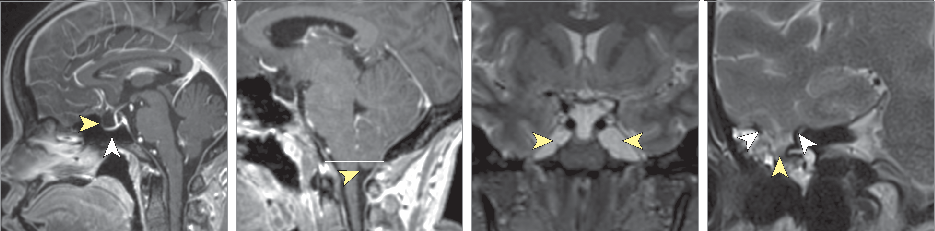
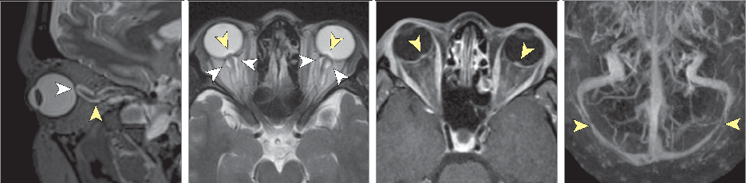

本ページで使用する略語一覧
| 略語 | 正式名称 — 日本語訳 |
| IH | Intracranial Hypertension — 頭蓋内圧亢進 |
| IIH | Idiopathic Intracranial Hypertension — 特発性頭蓋内圧亢進症（偽脳腫瘍） |
| MRI | Magnetic Resonance Imaging — 磁気共鳴画像法 |
| CSF | Cerebrospinal Fluid — 脳脊髄液 |
| TVSS | Transverse Venous Sinus Stenosis — 横静脈洞狭窄 |
| ON | Optic Nerve — 視神経 |
| ONH | Optic Nerve Head — 視神経乳頭 |
| BMI | Body Mass Index — 体格指数（体重kg÷身長m²） |
| LP | Lumbar Puncture — 腰椎穿刺 |
| IQR | Interquartile Range — 四分位範囲 |
| MS | Multiple Sclerosis — 多発性硬化症 |
| NMOSD | Neuromyelitis Optica Spectrum Disorder — 視神経脊髄炎スペクトラム障害 |
SECTION 1 なぜ今この問いか — IHの画像所見とその過剰評価
IHのMRI所見：IIHの専売特許ではない
Empty sella（トルコ鞍空洞化）、perioptic CSF増加、視神経蛇行、横静脈洞狭窄（TVSS）などの頭蓋内圧亢進（IH）を示唆するMRI所見は、特発性頭蓋内圧亢進症（IIH）の典型的な特徴として広く認識されているが、実際には一次性頭痛や無症候性の一般患者にも検出される。Empty sellaの一般集団における有病率は8〜35%と報告されており、女性・肥満者に多い。しかし、この所見はしばしば自動的にIIHと結び付けられてしまう。
IIHは慢性的な頭蓋内圧亢進を特徴とし、頭痛・乳頭浮腫（papilledema）・視力障害をきたす疾患である。肥満との関連が強く、米国では2030年までに成人の約50%が肥満になると予測されており、英国では2002〜2016年の間にIIHの発症率が2倍となり、入院数は442%増加、直接医療費は6倍に増加した。これほどの関心を集める一方で、empty sellaを持つ患者への過剰な診断・侵襲的検査（腰椎穿刺）が問題視されている。
研究の目的：有病率と乳頭浮腫との関連を明らかにする
本研究の目的は2点である。①任意の臨床的適応で脳MRIを受ける外来患者におけるIH画像所見の有病率を明らかにすること、②MRI撮影と同時に施行した眼底写真によって乳頭浮腫の有無を確認し、MRI所見との関連を検討することである。「現在の頭蓋内圧上昇の確実な臨床指標」である乳頭浮腫をMRIと同時評価した横断研究は本研究が初めてである。
SECTION 2 研究デザインと評価方法
デザインと対象集団
本研究は2019年8月1日〜2020年3月31日に1施設（Emory Brain Health Center）で実施された前向き横断研究である。18歳以上で臨床的適応により脳MRIを受ける外来患者を連続的にスクリーニングし、MRI直後に非散瞳眼底カメラで両眼の眼底写真を撮影した。眼底写真撮影には5分程度しか要さず、患者の負担は最小限であった。仰臥位が不可能または固視困難な患者は除外された。
MRI評価：10種の頭蓋内圧亢進所見
単一の専門神経放射線科医（マスク下）が全例のMRIを系統的に評価した。IIHに関連するとされる以下の10種の放射線学的所見を評価した（確立された基準を使用）。MRIはすべて同一の3Tユニット（Siemens MAGNETOM Skyra）で施行。
| 所見 | 定義・評価基準 | 必要なシーケンス |
|---|---|---|
| Empty sella トルコ鞍空洞化 |
下垂体グレード ≥ 3（鞍床に押しつけられた扁平下垂体） | 矢状断 T1 |
| Perioptic CSF増加 視神経周囲CSF拡張 |
視神経鞘CSFの拡張 | 軸位断 T2 |
| 視神経蛇行 ON tortuosity |
眼窩内視神経の垂直方向の蛇行増大 | 斜矢状断 T2 |
| 後強膜扁平化 Posterior scleral flattening |
後極の眼球壁の扁平化 | 斜矢状断 T2 |
| ONH突出 ONH protrusion |
前篩板視神経乳頭の眼球内への突出 | 軸位断 T2 |
| Meckel腔拡大 Enlarged Meckel caves |
三叉神経を囲むCSF腔の異常拡大（両側） | 冠状断 T2 |
| 脳瘤 Cephalocele |
頭蓋底骨欠損を介した脳・髄膜の脱出 | 冠状断 T2 |
| 小脳扁桃下垂 Cerebellar tonsillar ectopia |
大後頭孔より >5 mm の扁桃下垂 | 矢状断 T1 |
| 両側TVSS Transverse sinus stenosis |
遠位横静脈洞の両側 ≥50% 狭窄 | 造影MRV （造影例のみ） |
| ONH造影増強 ONH enhancement |
前篩板視神経乳頭の造影効果（乳頭浮腫の直接指標） | 軸位断 T1+造影 （造影例のみ） |
眼底写真による乳頭浮腫評価
MRI直後に非散瞳眼底カメラ（Kowa nonmydα-DIII）を用いて両眼の眼底写真を撮影した。熟練した医学生が撮影を担当し、訓練を受けた2名の神経眼科医が独立してすべての写真を評価した。写真は5段階で品質評価され（グレード1：診断価値なし〜グレード5：理想的）、「正常」「視神経乳頭浮腫」「その他視神経異常」に分類した。異常所見を認めた患者は神経眼科医が直接評価し、乳頭浮腫の診断を確定した。乳頭浮腫は現在進行中のIHの確実な臨床指標であり、腰椎穿刺なしに開口圧を代替できる。
SUMMARY 第1章のキーメッセージ
SECTION 3 患者背景
スクリーニングと最終解析対象
2019年8月〜2020年3月に388名がスクリーニングされ、そのうち92名が除外された（58名が参加拒否、16名が同意不能、14名が眼底撮影不能、4名が重複）。最終解析対象は296名。なお、SARS-CoV-2パンデミックにより計画より早期に研究を終了した。
患者数
（188名）
（IQR 37.8–62.0）
（IQR 23.9–32.0）
（BMI ≥25）
（124名）
MRI施行理由
最も多いMRI施行理由は脳腫瘍のサーベイランスであり（82名、27.7%）、次いで非頭痛性神経症状の精査（58名、19.6%）、多発性硬化症・NMOSD・MOGAD の診断・管理（55名、18.6%）、てんかん発作・術前評価（53名、17.9%）と続いた。頭痛精査は26名（8.8%）に過ぎず、頭蓋内圧亢進疾患の精査はわずか4名（1.4%）であった。すなわちこの研究コホートの大多数はIHとは無関係の適応でMRIを受けた患者群である。
SECTION 4 MRI所見の有病率
主要結果：IH画像所見は外来患者の約半数に存在する
296名中145名（49.0%）が少なくとも1つのIH画像所見を有していた。4つ以上の所見を持つ患者は5名（1.7%）であった。最も頻度の高い所見はempty sellaで、眼窩所見は比較的少なかった。
（145名 / 296名）
（98名）
（47名）
（32名）
（23名）
（6/198名・造影例のみ）
全MRI所見の有病率一覧
| MRI所見 | 全患者（N=296） | 乳頭浮腫あり（n=5） | 乳頭浮腫なし（n=291） | p値 |
|---|---|---|---|---|
| Empty sella | 98 (33.1%) | 4 (80.0%) | 94 (32.3%) | .006 |
| Meckel腔拡大 | 47 (15.9%) | 2 (40.0%) | 45 (15.5%) | .18 |
| Perioptic CSF増加 | 32 (10.8%) | 2 (40.0%) | 30 (10.3%) | .09 |
| 視神経蛇行 | 23 (7.8%) | 3 (60.0%) | 20 (6.9%) | .004 |
| 後強膜扁平化 | 2 (0.7%) | 0 | 2 (0.7%) | >.99 |
| ONH突出 | 0 | 0 | 0 | NA |
| ONH造影増強 | 0 | 0 | 0 | NA |
| 脳瘤 | 4 (1.4%) | 1 (20.0%) | 3 (1.0%) | .07 |
| 小脳扁桃下垂 | 1 (0.3%) | 0 | 1 (0.3%) | >.99 |
| 両側TVSS ※198名で評価 |
6/198 (3.0%) | 2/4 (50.0%) | 4/194 (2.1%) | .005 |

AEmpty sella turcica：矢状断postcontrast T1。黄矢頭はCSFで満たされた拡大鞍腔、白矢頭は鞍床に押しつけられた扁平下垂体を示す。
B小脳扁桃下垂：矢状断postcontrast T1。矢頭は大後頭孔（白線）より5 mm下位に位置するが正常な円形形態を保つ小脳扁桃を示す。
CMeckel腔拡大：冠状断T2。矢頭は両側性に異常拡大したCSF充填Meckel腔を示す。
DMeningoencephalocele（髄膜脳瘤）：冠状断T2（右側頭葉）。黄矢頭は鼓膜天蓋の骨欠損を、白矢頭は右下側頭葉の脱出を示す。隣接乳突洞蜂巣内の液体はCSF漏出を示唆。

E後強膜扁平化・視神経蛇行：視神経面への斜矢状Volumetric T2再構成。白矢頭は後強膜扁平化、黄矢頭は眼窩内視神経鞘複合体の垂直方向蛇行増大を示す。
FONH突出・Perioptic CSF増加：軸位断T2。黄矢頭は両側の前篩板視神経乳頭突出（高度乳頭浮腫）、白矢頭は両側視神経鞘のCSFによる拡張を示す。
GONH造影増強：軸位断postcontrast T1。矢頭は両側前篩板視神経乳頭の造影増強（視神経乳頭浮腫の直接指標）を示す。
H両側横静脈洞狭窄（TVSS）：postcontrast MRV cranio-caudal最大輝度投影。矢頭は両側遠位横静脈洞の平滑な漸進的高度狭窄を示す。
SECTION 5 乳頭浮腫の有病率と5症例の詳細
乳頭浮腫は全体のわずか1.7%
眼底写真で乳頭浮腫が確認されたのは296名中5名（1.7%）のみであった。これら5名の内訳は以下の通りで、IIH単独ではなくさまざまな原因が背景にあった。
| 症例 | 背景 | 主なMRI所見 |
|---|---|---|
| 症例1・2 | IIH既往あり、増悪する頭痛で受診 | Empty sella、視神経蛇行、TVSS（1名） |
| 症例3・4 | 膠芽腫（glioblastoma） | Empty sella、TVSS（1名） |
| 症例5 | 左側頭葉meningoencephalocele に伴う側頭葉てんかん | Empty sella、脳瘤 |
5名のうち乳頭浮腫なしでのIIH（真のIIH without papilledema）はゼロであった。また5名で最も多かったMRI所見はempty sella（4名・80%）、視神経蛇行（3名・60%）、perioptic CSF増加（2名・40%）、Meckel腔拡大（2名・40%）であった。いずれの患者も小脳扁桃下垂・後強膜扁平化は認められなかった。
乳頭浮腫と有意に関連した患者特性
乳頭浮腫群と非乳頭浮腫群を比較すると、BMI中央値（37.6 vs 27.5、p=.04）とIIH既往（40.0% vs 0.7%、p=.001）が有意に高かった。年齢・性別・人種・頭痛の有無は両群間で有意差なし。MRI所見ではempty sella（p=.006）、視神経蛇行（p=.004）、両側TVSS（p=.005）が乳頭浮腫群で有意に多かった。脳腫瘍既往のある82名を除いた感度解析でも結果は変わらなかった。
SECTION 6 MRI所見数と乳頭浮腫の有病率の関係
所見が多いほど乳頭浮腫リスクは高まる
MRI所見数の増加とともに乳頭浮腫の有病率は上昇した。1所見以上ではわずか2.8%にとどまるが、4所見以上では40.0%に達する。この「所見の積み重ね」が乳頭浮腫予測に有用な可能性がある。
| MRI所見数 | 該当患者数 | 乳頭浮腫（無） | 乳頭浮腫（有） | 乳頭浮腫有病率 | p値 |
|---|---|---|---|---|---|
| ≥0（全員） | 296名 | 291名 | 5名 | 1.7% | >.99 |
| ≥1 | 145名 | 141名 | 4名 | 2.8% | .21 |
| ≥2 | 48名 | 44名 | 4名 | 8.3% | .003 |
| ≥3 | 16名 | 13名 | 3名 | 18.8% | .001 |
| ≥4 | 5名 | 3名 | 2名 | 40.0% | .002 |
SUMMARY 第2章のキーメッセージ
SECTION 7 各MRI所見の診断的価値
TVSSの高い診断特性
過去のシステマティックレビューでは、TVSSはIIHに対して感度97%・特異度93%と最も有用なMRI所見とされている。視神経蛇行は感度43%ながら特異度90%、後強膜扁平化は感度66%・特異度98%、perioptic CSF増加は感度58%・特異度89%、ONH突出は感度36%・特異度99%と報告されている。本研究でもTVSS・視神経蛇行は乳頭浮腫患者で有意に多く確認された。
「4所見の組み合わせ」の診断特性
2013年のIIH診断基準（Friedman et al.）では、乳頭浮腫のないIIH（IIH without papilledema）の診断には①empty sella、②後眼球扁平化、③perioptic subarachnoid space拡張（±視神経蛇行）、④TVSSの4所見のうち3つ以上の組み合わせが必要とされる。先行研究では成人慢性頭痛＋高開口圧患者における診断特異度はほぼ100%だが感度は64%にとどまる。本研究で同一基準を適用すると、乳頭浮腫（任意原因）に対する特異度は99%、感度は20%であった。感度が低い理由として、乳頭浮腫症例の一部が4所見すべてを満たさない（造影非施行によりTVSS評価不能な例を含む）点が挙げられる。
SECTION 8 実臨床への示唆：腰椎穿刺は必ずしも必要ではない
Key Message：偶発的に検出されたIH画像所見に対して、症状（頭痛・視覚症状）または乳頭浮腫がなければ系統的な腰椎穿刺は不要と考えられる。
推奨されるアプローチ：眼底検査を優先する
IH画像所見の偶発発見：脳MRIで1つ以上のIH所見（empty sella、TVSS、視神経蛇行など）が偶発的に検出された。
臨床評価：IHの症状（頭痛の性質・増悪、視覚症状、第6脳神経麻痺）の有無を確認する。症状がなければ安心させつつ慎重に経過観察。
眼底検査（優先）：現在のIHの有無を確認するために眼底検査（乳頭浮腫の有無）を施行する。多くの神経内科医が眼底検査に不慣れであれば、非散瞳眼底カメラの活用、あるいは神経眼科への紹介が有用。
乳頭浮腫あり → 腰椎穿刺・精査：乳頭浮腫が確認された場合（特に≥2所見ある場合は有病率8.3%以上）、腰椎穿刺による開口圧測定・精査を行う。乳頭浮腫なし → 系統的LPは原則不要。
注意：乳頭浮腫を見落とすと永続的な視力障害のリスクがある。神経内科医の多くは眼底検査に習熟していないことが知られており、過去の研究では診断精度に問題があることが示されている。非散瞳眼底カメラの神経内科クリニックへの導入、またはAIによる乳頭浮腫スクリーニングが将来的な解決策となりうる。
SECTION 9 MRI所見は「過去のIH」を反映している可能性
IH正常化後も持続する所見と改善する所見
偶発的に検出されたIH画像所見の多くは、現在の頭蓋内圧上昇ではなく過去のIHを反映している可能性がある。MRI所見の持続性には以下の違いがある：
| 分類 | 所見 | 頭蓋内圧正常化後の推移 |
|---|---|---|
| 骨性・構造的変化 不可逆的 |
Empty sella Meckel腔拡大 脳瘤 |
骨・構造の変形は正常化後も持続することが多い |
| 機械的変形 改善の可能性 |
後強膜扁平化 Perioptic CSF増加 視神経蛇行 |
頭蓋内圧が正常化すれば改善しうる |
このような持続性の違いから、MRI所見のみで現在の頭蓋内圧状態を判断することは困難である。乳頭浮腫こそが現在進行中のIHの最も信頼できる代替マーカーであり、患者選別に最も有用な指標である。
SECTION 10 側頭葉てんかんとIIH：見落とされやすい関連
本研究の症例5は側頭葉meningoencephaloceleに伴うてんかんを呈していた患者で、乳頭浮腫が確認された。近年、側頭骨鼓膜天蓋（tegmen mastoideum）の骨欠損を介した側頭葉脳瘤に起因するてんかんが、IIHの稀な発現形態として認識されるようになっている。これらの患者はIIH様の画像所見を示すが、典型的なIHの症状（頭痛・乳頭浮腫）を経時的に発症しないことが多い。側頭葉てんかんの精査でMRIを施行した際に、IH様の画像所見を伴う脳瘤が発見された場合は、この関連を念頭に置く必要がある。
SECTION 11 研究の強みと限界
強みと限界
強み：前向きデザイン、MRIと同時の眼底写真（乳頭浮腫のリアルタイム評価）、全例で同一の専門神経放射線科医が評価した点が挙げられる。
限界：①単施設研究（Emory Healthcareは三次・四次施設のため一般外来集団の代表性に限界）。②約33%が非造影MRIのためTVSS評価不能（有病率の過小推定の可能性）。③乳頭浮腫患者が5名と少なく多変量解析・交絡変数（BMI・IIH既往）の調整不可。④SARS-CoV-2パンデミックによる早期終了。⑤腰椎穿刺は研究プロトコルに含まれず、個々の所見の予測値は未算出。
SUMMARY 第3章のキーメッセージ
出典：Chen BS, Meyer BI, Saindane AM, Bruce BB, Newman NJ, Biousse V. Prevalence of Incidentally Detected Signs of Intracranial Hypertension on Magnetic Resonance Imaging and Their Association With Papilledema. JAMA Neurology. 2021;78(6):718-725.
DOI：https://doi.org/10.1001/jamaneurol.2021.0710
Published Online: April 19, 2021.
本資料は教育目的で作成したサマリーです。診断・治療方針の決定には必ず原典論文を参照してください。
制作：ICU 関谷